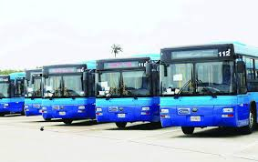
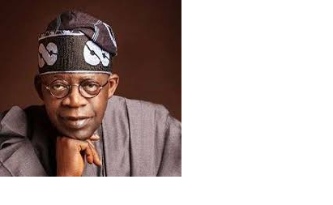

BRT-LAGBUS Mobility was founded as the start-up BRT Bus by the Lagos state goverment under the leadership of Babatunde R.FASHOLA under the political platform of the APC political party,Apc, who had the vision of making sustainable bus travel both comfortable and affordable. FlixBus was officially launched in 2013 after the deregulation of the German bus market and quickly became the leading long-distance travel provider within the country.
His exelence govenor Akinwunmi Ambode of lagos state has made the operation and smooth running of the Brt buses a reality. lagos state has mtransformed from transportation mischief into a city of luxurious transportation experience at a very subsidized rate,the brt lane and tracks made by the governor has made navigating in lagos a pleasurable experience
His exelence govenor Akinwunmi Ambode of lagos state and the peopl's leader Asiwaju bola hammed tinumbu has made the operation and smooth running of the Brt buses in lagos a huge success. lagos state has mtransformed from transportation mischief into a city of luxurious transportation experience at a very subsidized rate,the brt lane and tracks made by the governor has made navigating in lagos a pleasurable experience
BRT-LAGBUS TERMINAL are now over 417 in lagos state and more are still bieng biult. under the political platform of the APC political party,Apc, who had the vision of making sustainable bus travel both comfortable and affordable. FlixBus was officially launched in 2013 after the deregulation of the German bus market and quickly became the leading long-distance travel provider within the country.BRT-LAGBUS Mobility was founded as the start-up BRT Bus by the Lagos state goverment under the leadership of Babatunde R.FASHOLA under the political platform of the APC political party,Apc, who had the vision of making sustainable bus travel both comfortable and affordable. FlixBus was officially launched in 2013 after the deregulation of the German bus market and quickly became the leading long-distance travel provider within the country.